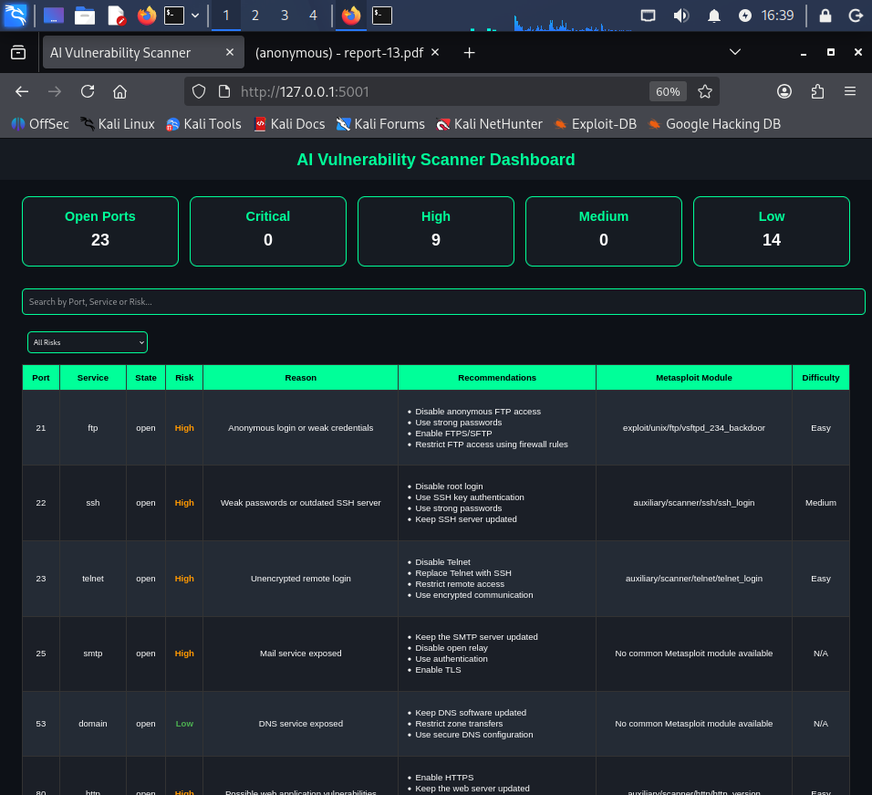
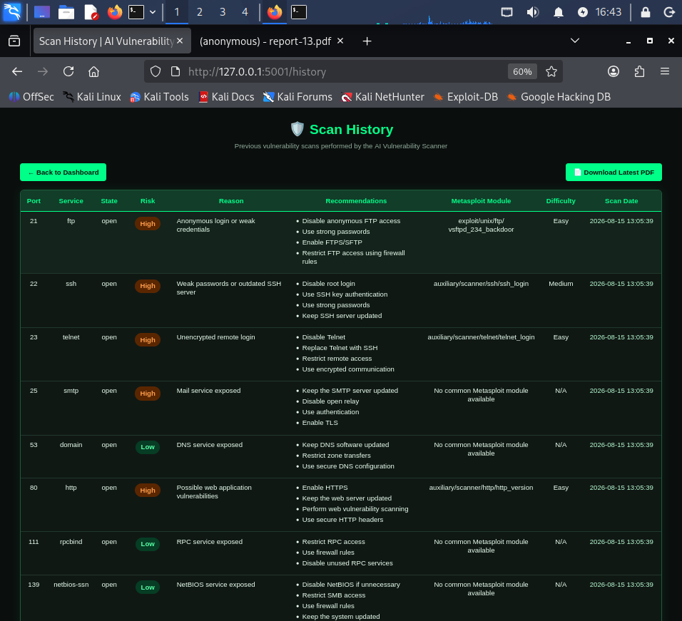
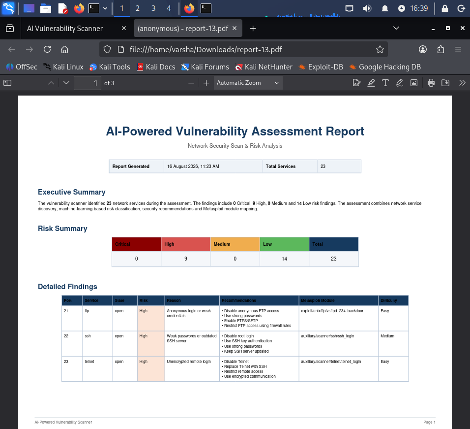

$ whoami
Cybersecurity enthusiast focused on vulnerability assessment, penetration testing, network security, and security automation.
$ cat profile.txt
Name: Varsha Bhati
Role: Cybersecurity Specialist
Focus: Vulnerability Assessment
OS: Kali Linux
Status: Available for opportunities
$ _
I am a B.Tech student specializing in cybersecurity, with hands-on experience in vulnerability assessment, penetration testing, network security, and Python-based security automation.
I enjoy building practical security tools and analyzing systems to identify security weaknesses and provide actionable remediation recommendations.
My current focus is developing skills in penetration testing, vulnerability assessment, Linux security, network security, and DevSecOps.
> Security-focused developer
> Python & automation
> Network security
> Vulnerability assessment
Vulnerability Assessment
Penetration Testing
Network Security
Security Testing
Nmap
Metasploit
Burp Suite
Wireshark
OWASP ZAP
Python
Flask
SQL
HTML
CSS
Docker
Git
GitHub
GitHub Actions
CI/CD
Kali Linux
Linux
Windows
Scikit-learn
Risk Classification
Data Analysis
Featured Project
An AI-assisted vulnerability assessment platform that discovers network services using Nmap, classifies security risks, provides service-specific remediation recommendations, maps relevant Metasploit modules, stores scan history, and generates professional PDF vulnerability reports.



Cybersecurity / Machine Learning
A machine-learning-based intrusion detection system designed to analyze network traffic and identify suspicious activity and common attack categories.
December 2024 – June 2025
November 2025 – March 2026
Bikaner Technical University
2023 – 2027 (Expected)
I'm interested in cybersecurity opportunities, internships, freelance security assessments, and collaborative projects.